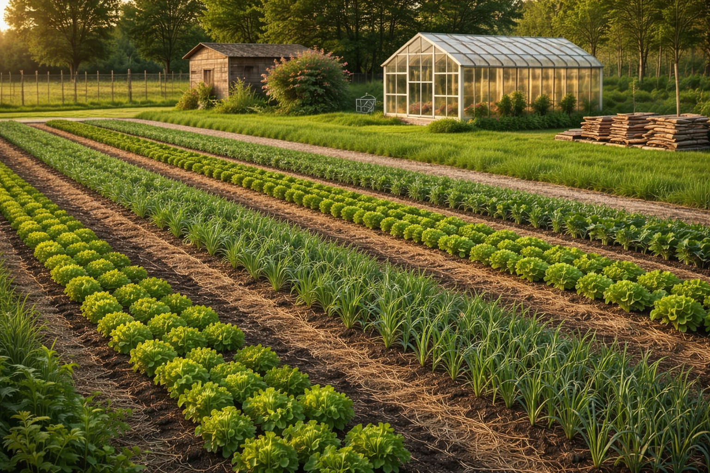
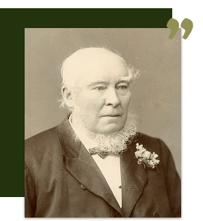

Platform all-in-one untuk jual beli hasil pertanian, edukasi, dan diskusi dengan komunitas petani seluruh Indonesia.

Daftar gratis dengan email atau nomor HP
Temukan produk, artikel, atau diskusi menarik
Transaksi, belajar, dan berbagi pengalaman

"Kamu tidak bisa menjadi kaya dengan bertani, tetapi kamu bisa menjadi kaya dari pertanian"
Kutipan ini menyoroti perbedaan antara kekayaan yang didapat secara instan dan kemakmuran jangka panjang. Kutipan ini mengingatkan kita bahwa meskipun bertani mungkin tidak menghasilkan kekayaan secara cepat, pertanian memberikan hasil yang berkelanjutan dan layak untuk dirayakan. Kekayaan sejati dalam bentuk pertumbuhan, keberlanjutan, serta kehidupan yang bermakna dan terhubung dengan alam.
Saat kita terlibat dalam pertanian, kita menyadari bahwa usaha yang kita lakukan tidak hanya berkontribusi pada penghasilan, tetapi juga memberikan rasa tujuan dan kebersamaan dalam komunitas. Kebahagiaan dalam bertani terletak pada bagaimana hal tersebut memperkaya hati dan kehidupan kita.